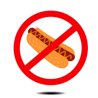

Description
I really don't enjoy hot dogs. The coarse of its ketchup, mustard, pickles, and onions is rough and irritating and it gets everywhere. Therefore, I took it upon myself to create a hot dog detector to make sure that what I'm about to consume absolutely is NOT a hot dog. In order to use this absolutely amazing detector, simply take a picture of a hot dog and upload the image into the model output. There, the machine will determine whether or not the food you're about to eat is free of hot dogs and safe to consume.
Status
Model Output
